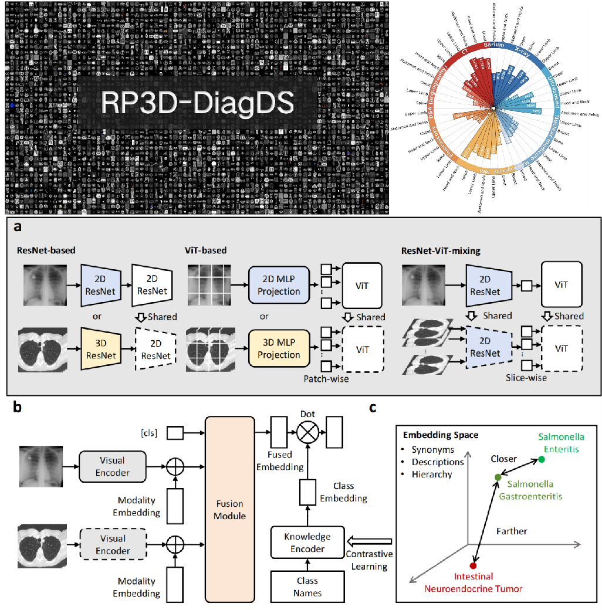
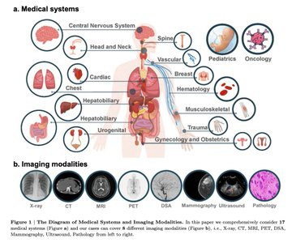

|
Hello! I am a PhD candidate at Shanghai Jiao Tong University, advised by Prof. Weidi Xie. I graduated with a bachelor's degree in Computer Science from the School of Electronic Information and Electrical Engineering at Shanghai Jiao Tong University in June 2023. My current research interest focuses on Artificial Intelligence for Healthcare (AI4Health). I am looking forward to the day when AI in healthcare can truly benefit humanity. Email / Github / Google Scholar
|

|
Research |
|  |
Qiaoyu Zheng*, Weike Zhao*, Chaoyi Wu*, Xiaoman Zhang, Ya Zhang, Yanfeng Wang , Weidi Xie Technical Report, 2023. build up an academically accessible, large-scale diagnostic dataset, present a knowledge enhanced model architecture that enables to process arbitrary number of input scans from various imaging modalities, and initialize a new benchmark for multi-modal multi-anatomy long-tailed diagnosis. Our method shows superior results on it. Additionally, our final model serves as a pre-trained model, and can be finetuned to benefit diagnosis on various external datasets. |
|  |
Chaoyi Wu*, Jiayu Lei*, Qiaoyu Zheng*, Weike Zhao*, Weixiongt Lin*, Xiaoman Zhang*, Xiao Zhou*, Ziheng Zhao*, Ya Zhang, Yanfeng Wang , Weidi Xie Technical Report, 2023. We present recent efforts on assessing GPT-4V for multimodal medical diagnosis, by case studies, covering 17 human body systems, across 8 clinical imaging modalities, e.g., radiology, pathology. |